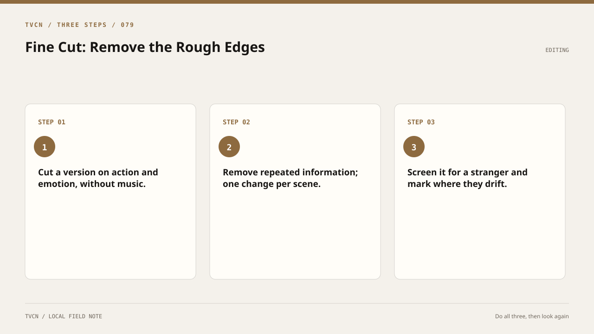

Fine cut trims edges, not structure
A fine cut does three things: remove the extra half second around each shot, align action cuts, and drop reactions the performance does not need. Structural problems go back to the rough cut; do not hide them with transitions here.
After every cut ask what the audience knows less. If cause and effect survive, the cut works. If a caption must explain it, go back to the rough cut.
Limits
Shorter is not automatically better. Remove every breath and pause and the character becomes a machine; keep the pauses that carry relationship.
On set
Find three rough edges per scene: a cut half a frame early, overlapping breaths, an extra second of air. Then let a stranger watch and note when they check their phone.
Three-step flow

Do this
Fine cut is not adding effects; it smooths every cut, breath, and extra half-second.
- Find three burrs per scene: a cut half a frame early, overlapping breath, an empty shot one second long.
- Fix only those three categories without adding shots.
- Show a stranger and note when they check their phone; fix that second.
Avoid
Do not hide structure problems with fancy transitions; a wipe cannot save a drag.
Image note. Covers, diagrams and step images on this page are editorial illustrations or structure diagrams, not photographs of a test performed here; they are not evidence of measured gear performance. Where an image is AI-assisted, the caption says so. Read the test conditions in the text before treating an image as proof.